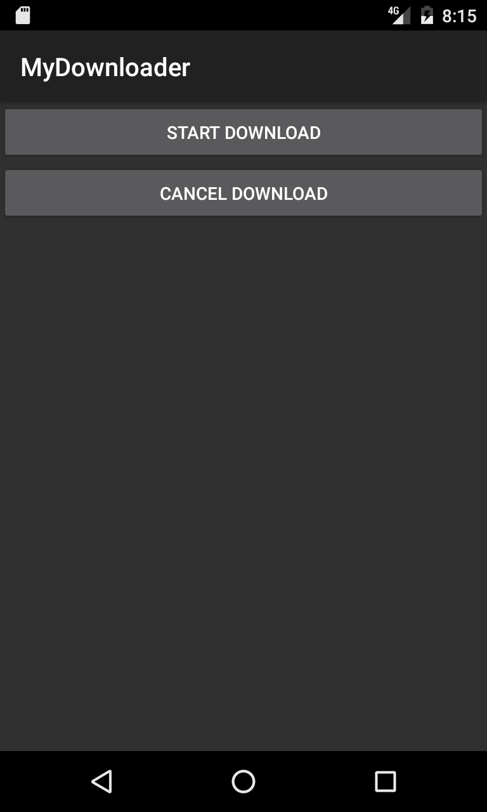

Duration
20 minutes
Goals
The primary goal of this lab is to start a service from an Activity.
Required assets
This lab is a continuation of the previous lab. You may use your existing solution or use the Completed solution in the Exercise 1 folder. The provided Exercise 2 folder contains a subfolder named Completed with a solution you can use to check your work. Please make sure you have these folders before you begin.
Challenge
You'll add mock download logic to an existing service and then start and stop the service.
- Open the completed solution from the previous exercise and open MainActivity.cs.
- Update the button Click event handlers to start and stop MyDownloadService.
- Open MyDownloadService.cs and add a for-loop in
OnStartCommandto simulate a long running task. - Update
OnStartCommandso the "work" isn't performed on the UI thread. - Use intent extras to pass data to the service to control the number of iterations the for-loop performs.
- Add cancellation to the Service so the asynchronous work is stopped when the service is stopped externally (from the Activity).
Steps
Start and Stop the service
- Open the completed solution from the previous exercise and open MainActivity.cs.
- In the Start button click event handler method ButtonStartClick, create an
Intentto start MyDownloadService by setting the Type constructor argument totypeof(MyDownloadService). - Start the service by calling
StartServiceand passing in the intent. - In the Cancel button click event handler method ButtonCancelClick, create an
Intentto stop MyDownloadService. - Stop the service by calling
StopServiceand passing in the intent. - Optionally run the application and try the buttons. You can observe the service lifecycle methods' execution in the output window.
Perform work in the service
We're going to add mock logic to our service to better simulate a long-running operation like a file download.
- Open MyDownloadService.cs and find the OnStartCommand method.
- Display a
Toastpopup inOnStartCommandto indicate to the user when the service is performing work. To create aToastcallToast.Make. To display theToastcallShowon the instance. - Add mock logic by:
- creating a
forloop that iterates 15 times - output the current progress as a percentage using either
Log.DebugorDebug.WriteLine - use
Thread.Sleepto pause after every iteration
- creating a
- Run the application and start the service. Try pressing the buttons once the service has started. Try stopping the service. Does the Toast display?
Perform work asynchronously (don't block the UI thread)
Services run in the same process as your activities and by default perform work on the process's UI thread. We'll update the code so service doesn't block the UI thread.
- Queue the work performed by the
foron a thread-pool thread usingTask.Run. - We also want to stop the service when the work is complete, call
StopSelfwhen the for-loop completes. - Run the application again and start the service. Try stopping the service. Observe the Toast. Does the work stop?
Pass data to the Service
We'll pass an integer value for the for loop when starting the service. In a real download service you might pass a url or filename.
- Open MainActivity.cs and go to the
ButtonStartClickmethod. - And an integer value of your choice to the intent by calling
PutExtraand use "LoopCount" as the key. - Open MyDownloadService.cs and go to
OnStartCommand. - Extract the integer value from the intent by calling
GetIntExtraand again using "LoopCount" as the key. - Use the value to control the number of iterations of the for-loop.
- Run the application again and start the service. You won't block the UI thread, but try stopping the service this time. Does the work stop yet?
Implement cancellation
We stopped the service in the previous steps but we didn't stop the thread performing the work. We'll do that next.
- Add two
booleanfields to track the state of the download: name them isCancelled and isDownloaded. We're going to use these within our thread-pool thread so we'll mark them asvolatile. Note:volatileprevents optimization so our fields can be used across multiple threads but does not ensure thread-safety. - If the service is stopped externally,
OnDestroywill be called. SetisCancelledtotrueinOnDestroy. - At the top of
OnStartCommand, set bothisCancelledandisDownloadedtofalse. - In the for-loop conditional statement, add a check if
isCancelledisfalse. - We should only call
StopSelfif the service hasn't been stopped externally. EnsureisCancelledisfalsebefore callingStopSelf. - Optionally, display a
ToastinOnDestroyindicating if the download was successful. An example is shown below. - Run the application, start and cancel the download.
Bonus - use a Broadcast Receiver
If you have time and are familar with using broadcast receivers - use one to communicate with MainActivity.
Add a progress bar to MainActivity and enable it only while the service is downloading.
There's a project named Bonus in the Exercise 2 folder with a completed version.
Summary
In this exercise, you added logic to a service, started it from an application component, and stopped the service both internally and externally.